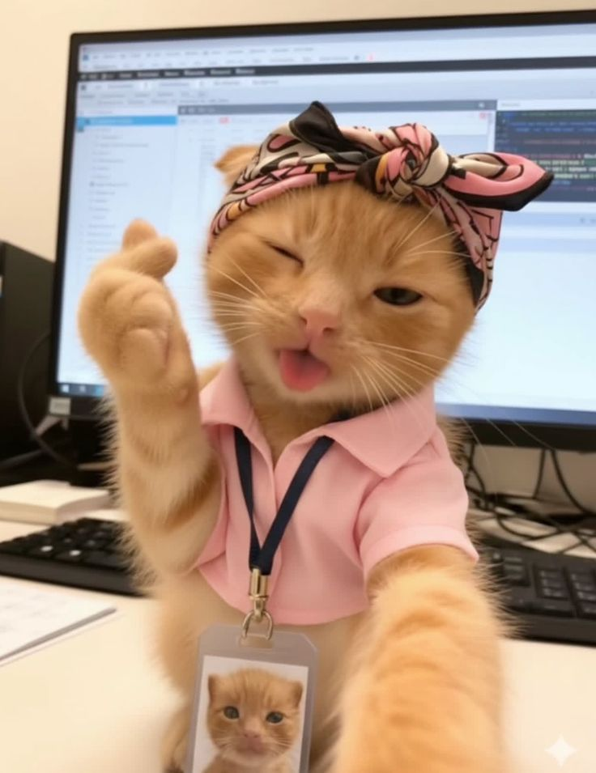
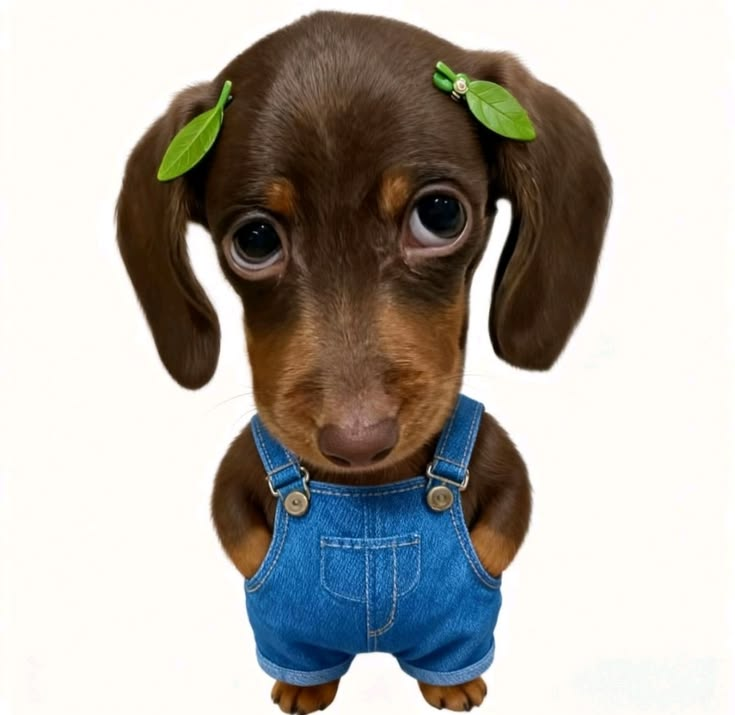

Namanya Mouza seekor kucing programmer anggun dengan bulu bersih seperti kapas dan mata berwarna zamrud. Setiap pagi ia duduk didepan komputer, menatap layar sambil mengibas-ngibaskan ekornya dengan penuh percaya diri. Mouza sangat menyukai tidur siang di atas keyboard merah muda favoritnya dan mengerjakan seluruh pekerjaan kantor. Walaupun terlihat manja, ia selalu menjaga kantor dengan penuh kasih sayang dan sesekali menggosok-gosokkan kepalanya ke kaki bosnya Mouza si kucing independent.

Inilah Jack, anjing yang sangat malas bertampang polos. berbeda dari mouza keseharian jack hanya tidur dan bermain. kulitnya berwarna sawo busuk dengan mata coklat yang hangat dan selalu memancarkan kebingungan. Jack gemar berlari di taman, menangkap frisbee, dan menggonggong saat mendengar suara sepatu di depan pintu. tetapi Ia adalah sahabat terbaik Mouza— selalu ada di sisinya di saat suka maupun duka. Goyangan ekornya setiap kali melihatmu adalah bukti kesetiaan yang tak pernah pudar...